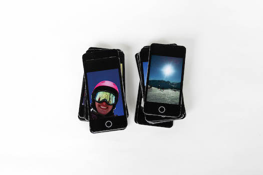
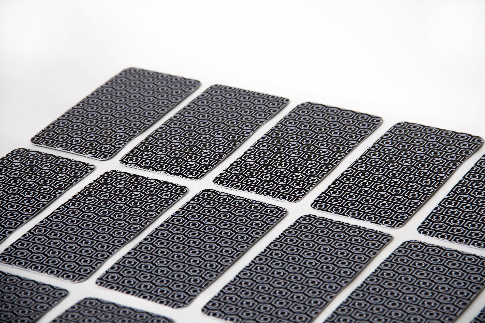
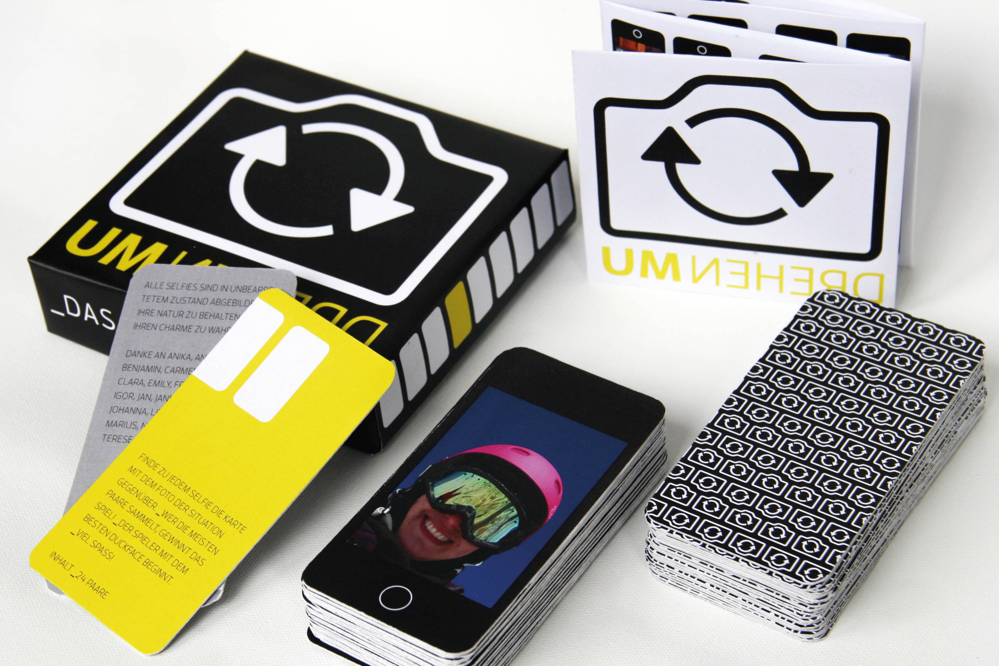
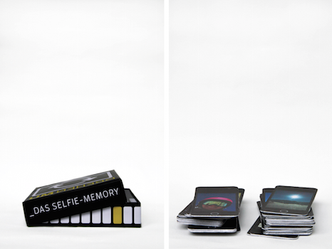
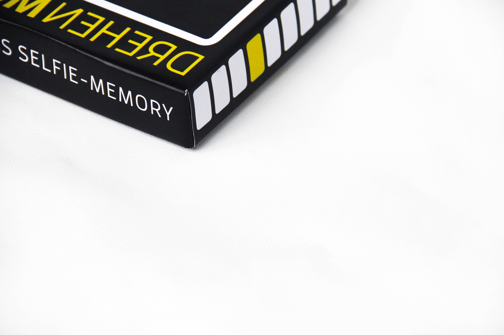
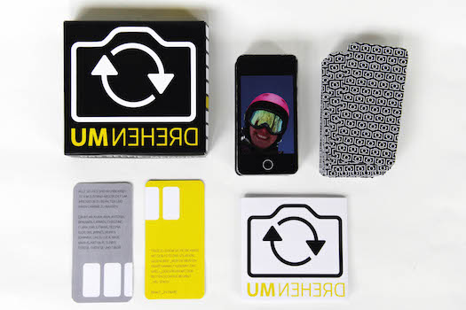

UMDREHEN / DAS SELFIE-MEMORY







A project to the topic of "selfies". The idea was to work with the situation of th two cameras from your phone facing two directions you have when taking a selfie (the taking a picture of you and the one who sees what you see). I asked friends to take two of those pictures and then made a game out of them. It is called "UMDREHEN" (german for 'to turn around') which stands for the act of turning around the setting of the camera as well as the cards during the game.